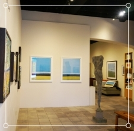
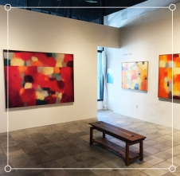
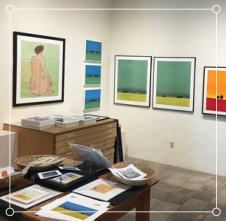
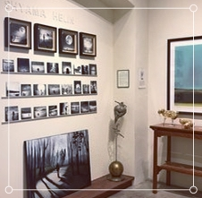

About Us
Art Works was started by Sam Wazowski when she was a schoolgirl in Nelson in 1975, although it didn't have a name then. Sam had an art teacher who would regularly bring artworks to school to show the pupils. The teacher would talk passionately about the different pieces of art. She showed the pupils how the artworks were created and discussed their possible meaning and what she felt the artists were conveying. Sam was hooked. She started to look around for artworks to collect for herself.
Initially, she found artworks here and there in old second-hand shops or by visiting elderly ladies and offering to value their artworks for them. One day she found a particularly nice work by a New Zealand artist called Colin McKenzie. She took it to a gallery to have it valued and was pleasantly surprised to find it was worth about ten times as much as she had paid for it. She sold it to the gallery on the spot. This gave her the idea that she could buy and sell art to build her collection.
Around this time Sam came up with her main idea: she would make it a principle when she sold a piece of art to use the proceeds to buy two pieces to replace it. In this way her collection would grow quickly. She wanted to balance this with collecting work by artists with established reputations or ones who were up and coming, so that she could build a quality collection. So, she has searched far and wide for the right pieces of art to acquire.
In 1999 Sam decided to make art collecting her main focus. She established her company, Art Works, and has been collecting art full-time ever since. Currently, she has hundreds of pieces of art, including many that are considered to be significant works. The idea came to her that it would be wonderful to be able to share her artworks with people from around the world, so she has started this website, which showcases the art she has collected.
- 
- 
- 
- 